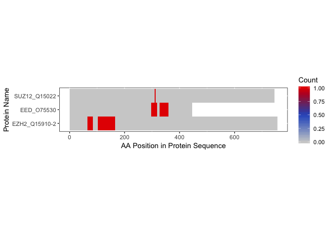
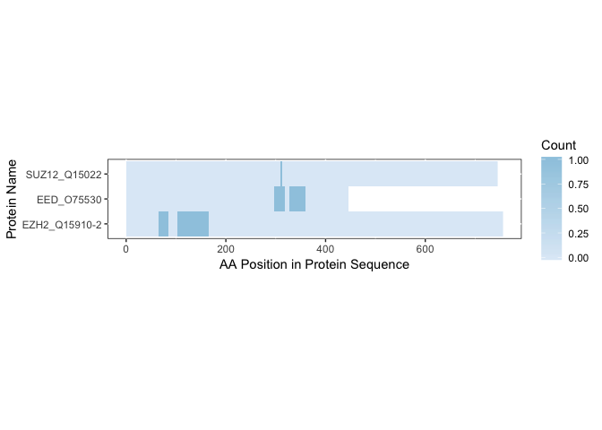
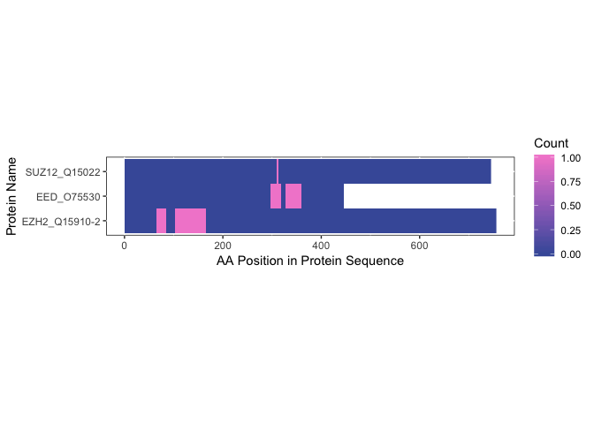
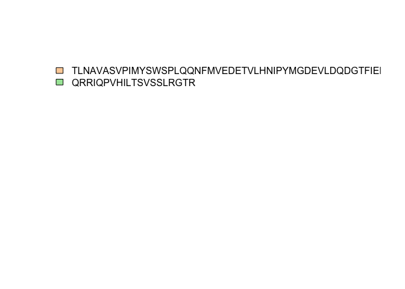
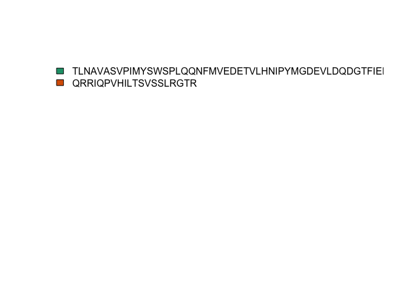
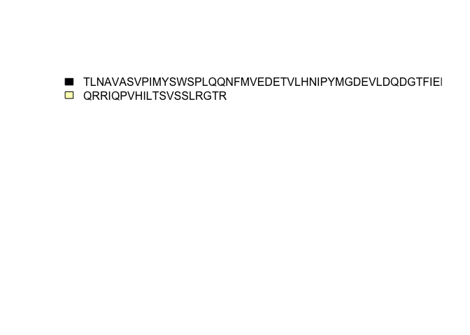
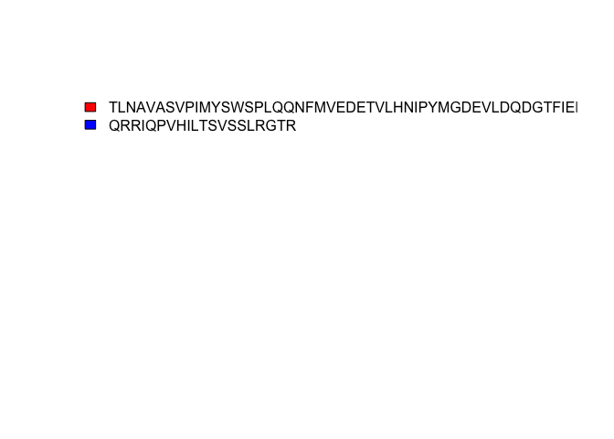
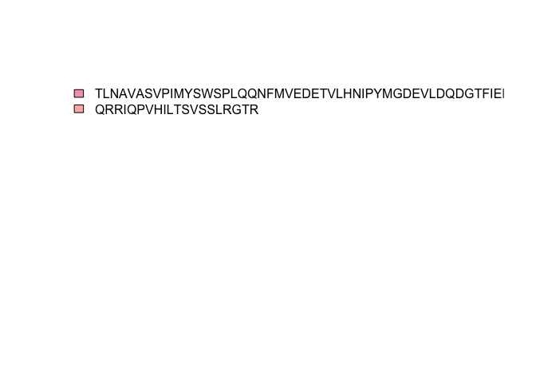
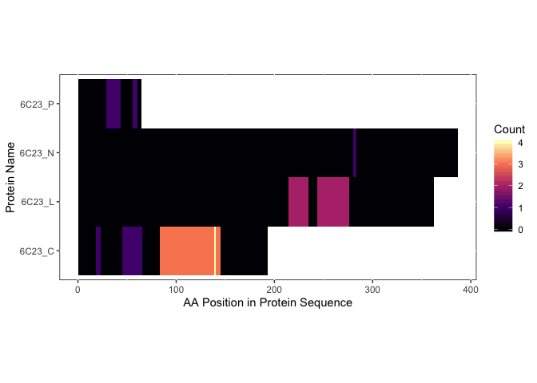

This tutorial is still under development and may change slightly as it is being edited.
A Brief Introduction
This tutorial is relevant to the published paper RNA exploits an exposed regulatory site to inhibit the enzymatic activity of PRC21. However, the workflow can be used for data processed by MaxQuant.
Setting Up Our Environment
Load Libraries
First, load the libraries needed for the package and tutorial.
Defining Our Variables
When loading the data, it is important to make sure that the files for input are named well so the functions will be able to correctly identify and organize the data.
sys.path <- system.file("extdata/NSMB_RBDmap",
package = 'crisscrosslinker',
mustWork = TRUE)
sys.files <- list.files(sys.path)
head(sys.files)## [1] "Repeat01_NoXL_ArgC_eluate.txt" "Repeat01_NoXL_ArgC_input.txt"
## [3] "Repeat01_NoXL_LysC_eluate.txt" "Repeat01_NoXL_LysC_input.txt"
## [5] "Repeat01_UV_ArgC_eluate.txt" "Repeat01_UV_ArgC_input.txt"Each of the file names contains 3 pieces of information: the name of the experiment, if it is an input/eluate file, and which protease was used for the experiment.
If comparing between multiple experiments, indicate the experiment names in the code.
# experiment_names <- c('experiment1','experiment2')
experiment_names <- c('Repeat02_NoXL','Repeat02_UV')We will also need to load the FASTA file that was used during the initial analysis to get the tryptic peptides. For more information on how this FASTA file was generated, please refer to the paper.
fasta_file <- seqinr::read.fasta(system.file("extdata/NSMB_FASTA",
'PRC2_5m.fasta',
package = 'crisscrosslinker',
mustWork = TRUE))If the file format is from MaxQuant with an Andromeda score, you will need to set it. The default setting is 20 and we will explicitly set it in this demonstration.
Initializing the Data
Extracting the Hits
We are now ready to get a list of the relevant hits for our data.
sequence_hit_list <- rbd.makeSeqHitList(fasta_file = fasta_file,
file_format = 'txt',
cutoff_score = cutoff_score,
experiment_directory = sys.path)Here we have found all of the tryptic peptides that:
- Have R/K or K/R cleavage
- Correspond to a protein name in the FASTA file
- Have an Andromeda score > our cutoff
Making an Input/Eluate Table
Since we want to compare the input and eluate data from the experiments, let’s make a table comparing the two.
We can see how the results look here:
| sequence | input | eluate | protein |
|---|---|---|---|
| ASMSEFLESEDGEVEQQR | 288150000 | 0 | SUZ12_Q15022 |
| ATWETILDGK | 2490900000 | 0 | SUZ12_Q15022 |
| DEVLSADYDLLGEK | 309200000 | 0 | EED_O75530 |
| DPNLLLSVSK | 49414000 | 0 | EED_O75530 |
| EAAFDDAVEER | 1168100000 | 0 | RBBP4_Q09028 |
| ECDPDLCLTCGAADHWDSK | 149440000 | 0 | EZH2_Q15910-2 |
We can now move on to making a plot.
Making an Input/Eluate Plot
As you can see, many of the hits that were found in the input were not found in the eluate. We will filter those later. For now, let’s plot everything.

We can change the default settings of the plot, including colors and the title by inputting some more variables2:
name_of_experiment <- 'RBDmap Experiments: Input vs. Eluate'
rbd.makeIEPlot(input_eluate_table,
experiment_names,
palette = 'Pastel1',
fill = 'white',
colour = 'black',
size = 1,
title = name_of_experiment)
Finding the Binding Sites
Now that we’ve compared our control, let’s remove all results that do not show up in the eluate files.
filtered_input_eluate_table <- input_eluate_table[input_eluate_table$eluate > 0,]
filtered_input_eluate_table| sequence | input | eluate | protein |
|---|---|---|---|
| ECSVTSDLDFPTQVIPLK | 1101400000 | 13380000 | EZH2_Q15910-2 |
| WLGDLILSK | 1180000000 | 14292000 | EED_O75530 |
| ECSVTSDLDFPTQVIPLK | 1649500000 | 16849000 | EZH2_Q15910-2 |
| LQLLDGEYEVAMQEMEECPISK | 1057200000 | 8763700 | SUZ12_Q15022 |
| WLGDLILSK | 1288100000 | 22946000 | EED_O75530 |
We’ll use these results for finding binding sequences. We’ll first get a data.frame of the binding sequences aligned to the FASTA file.
bs_output_fasta <- rbd.getBSfromIET(filtered_input_eluate_table,
fasta_file = fasta_file,
align_to = 'FASTA')
bs_output_fasta[c('pro_name','binding_sequence')]| pro_name | binding_sequence |
|---|---|
| EZH2_Q15910-2 | TLNAVASVPIMYSWSPLQQNFMVEDETVLHNIPYMGDEVLDQDGTFIEELIKNYDGKVHGDR |
| EED_O75530 | SCENAIVCWKPGKMEDDIDKIKPSESNVTILGR |
| EZH2_Q15910-2 | QRRIQPVHILTSVSSLRGTR |
| SUZ12_Q15022 | NRR |
| EED_O75530 | IHFPDFSTRDIHRNYVDCVR |
Making a Heatmap
Let’s make a heatmap and sort the sequences by their names.
bs_freqVector <- rbd.freqVector(bs_output = bs_output_fasta,
name_by = 'pro_name',
heatmap = TRUE,
db_selection = 'FASTA')## Warning: package 'gdtools' was built under R version 3.5.2
We can also adjust the colors of the heatmap if we so wish. You can put in a standard RColorBrewer or viridis palette or a list of hexcodes and/or standard R Colors.
rbd.freqVector(bs_output = bs_output_fasta,
name_by = 'pro_name',
heatmap = TRUE,
db_selection = 'FASTA',
colors = "Blues",
save_plot = FALSE)
rbd.freqVector(bs_output = bs_output_fasta,
name_by = 'pro_name',
heatmap = TRUE,
db_selection = 'FASTA',
colors = c('#b3ecec','#43e8d8','#48d1cc'),
save_plot = FALSE)
rbd.freqVector(bs_output = bs_output_fasta,
name_by = 'pro_name',
heatmap = TRUE,
db_selection = 'FASTA',
# palette from color-hex.com
colors = c("#465ca8","#7767b8","#a272c4",
"#cc7ecc",'#f38bd1'),
save_plot = FALSE)
If you require further customization, we recommend saving the output from rbd.freqVector and using that as input for a heatmap.
Aligning Peptides to a PDB File
We will now align the binding sequences to a PDB file. For simplicity, we’ll only focus on one protein: EZH2.
We already know the PDB file and chain that we want to align the proteins to. In this case, we can create and add a new table:
protein_dict <- read.csv(system.file("extdata/NSMB_misc",
'PRC2_protein_dict.csv',
package = 'crisscrosslinker',
mustWork = TRUE))
protein_dict| protein_id | uniprot_id | pdb_id |
|---|---|---|
| EZH2_Q15910-2 | Q15910-2 | 6C23_C |
| EED_O75530 | O75530 | 6C23_L |
| RBBP4_Q09028 | Q09028 | 6C23_N |
| SUZ12_Q15022 | Q15022 | 6C23_A |
| AEBP2_Q6ZN18 | Q6ZN18-2 | 6C23_P |
Now we don’t have to go through menus to be able to define the PDB ID/chain that we need to use. This will save us time when making our table of binding sequences.
You can always leave the dictionary blank in order to access an interactive menu to be able to use BLAST in order to align your sequence to a known PDB structure.
bs_ezh2 <- rbd.getBSfromIET(ezh2_iet,
fasta_file = fasta_file,
align_to = 'PDB',
protein_dict = protein_dict)Let’s see how many matches we had to the chain we chose:
| Var1 | Freq |
|---|---|
| PDB | 2 |
2 matched our chain! Let’s visualize it.
Making the PyMOL File
Now that we have the binding sequences aligned to a PDB file, we can create a PyMOL file.


There is an additional legend with the colors corresponding to the binding sequences. The colors will be assigned based on the order the binding sequences are in. If you would like the sequences in a different order, please order them before executing rbd.pymol().
If we do not choose any colors, it will default to the PyMOL tints palette. However, we can input any RColorBrewer or viridis palette as well as standard PyMOL/R colors or hexcodes.
rbd.pymol(bs_ezh2,
color_by = 'binding_sequence',
colors = 'Dark2',
file.name = 'pymol_Dark2.pml') # RColorBrewer palette
rbd.pymol(bs_ezh2,
color_by = 'binding_sequence',
colors = 'magma',
file.name = 'pymol_magma.pml') # viridis palette
rbd.pymol(bs_ezh2,
color_by = 'binding_sequence',
colors = c('red','blue'),
file.name = 'pymol_rgb.pml') # standard colors
rbd.pymol(bs_ezh2,
color_by = 'binding_sequence',
colors = c("#f8a1be","#ffb6b1"),
file.name = 'pymol_hexcodes.pml') # hexcodes
Differential Analysis
We have now looked at one experiment, but now we want to look at multiple experiments we have run and compare between them. First we will do what we have done before, but combine the different runs together to examine how often these binding sites appear3.
Each of these experiments have slighly different prefixes, so we will adjust them accordingly with a list. In this instance, we could probably get away with just using “UV” for all 3 repeats. However, for the purposes of this tutorial, we will explicitly define the prefixes.
We’re now ready to proceed to get the binding sequences for each of these repeats.
bs_output_diff_analysis <- data.frame()
num_repeats <- 1:4
repeat_names <- paste0('Repeat0',num_repeats)
for(rname in repeat_names){
shl <- sequence_hit_list[startsWith(names(sequence_hit_list),rname)]
enames <- paste0(rname,'_',c('UV','NoXL'))
input_eluate_table <- rbd.makeIETable(shl, enames)
filtered_input_eluate_table <- input_eluate_table[input_eluate_table$eluate > 0,]
bs_output_pdb <- rbd.getBSfromIET(filtered_input_eluate_table,
fasta_file = fasta_file,
align_to = 'PDB',
protein_dict = protein_dict)
bs_output_diff_analysis <- rbind(bs_output_diff_analysis,data.frame(bs_output_pdb))
}Now that we have loaded the data into our R environment, let’s make a PyMOL file4:
rbd.pymol(bs_output_diff_analysis,
color_by = 'freq',
colors = 'magma',
file.name = 'pymol_magma_diff_analysis.pml')


Session Info
## ─ Session info ──────────────────────────────────────────────────────────
## setting value
## version R version 3.5.1 (2018-07-02)
## os macOS 10.14.3
## system x86_64, darwin15.6.0
## ui X11
## language (EN)
## collate en_US.UTF-8
## ctype en_US.UTF-8
## tz Australia/Melbourne
## date 2019-04-08
##
## ─ Packages ──────────────────────────────────────────────────────────────
## package * version date lib
## ade4 1.7-13 2018-08-31 [1]
## assertthat 0.2.1 2019-03-21 [1]
## backports 1.1.3 2018-12-14 [1]
## bio3d * 2.3-4 2018-04-03 [1]
## BiocGenerics * 0.28.0 2018-10-30 [1]
## Biostrings * 2.50.2 2019-01-03 [1]
## callr 3.2.0 2019-03-15 [1]
## cli 1.1.0 2019-03-19 [1]
## colorspace 1.4-1 2019-03-18 [1]
## crayon 1.3.4 2017-09-16 [1]
## crisscrosslinker * 0.9 2019-04-02 [1]
## desc 1.2.0 2018-05-01 [1]
## devtools 2.0.1 2018-10-26 [1]
## digest 0.6.18 2018-10-10 [1]
## dplyr 0.8.0.1 2019-02-15 [1]
## evaluate 0.13 2019-02-12 [1]
## fs 1.2.7 2019-03-19 [1]
## gdtools * 0.1.8 2019-04-02 [1]
## ggplot2 * 3.1.0 2018-10-25 [1]
## glue 1.3.1 2019-03-12 [1]
## gridExtra 2.3 2017-09-09 [1]
## gtable 0.3.0 2019-03-25 [1]
## highr 0.8 2019-03-20 [1]
## htmltools 0.3.6 2017-04-28 [1]
## httr 1.4.0 2018-12-11 [1]
## IRanges * 2.16.0 2018-10-30 [1]
## jsonlite 1.6 2018-12-07 [1]
## knitr 1.22 2019-03-08 [1]
## labeling 0.3 2014-08-23 [1]
## lattice 0.20-38 2018-11-04 [1]
## lava 1.6.5 2019-02-12 [1]
## lazyeval 0.2.2 2019-03-15 [1]
## magrittr 1.5 2014-11-22 [1]
## MASS 7.3-51.4 2019-03-31 [1]
## Matrix 1.2-17 2019-03-22 [1]
## memoise 1.1.0 2017-04-21 [1]
## munsell 0.5.0 2018-06-12 [1]
## openxlsx * 4.1.0 2018-05-26 [1]
## pillar 1.3.1 2018-12-15 [1]
## pkgbuild 1.0.3 2019-03-20 [1]
## pkgconfig 2.0.2 2018-08-16 [1]
## pkgload 1.0.2 2018-10-29 [1]
## plyr 1.8.4 2016-06-08 [1]
## prettydoc 0.2.1 2018-01-16 [1]
## prettyunits 1.0.2 2015-07-13 [1]
## processx 3.3.0 2019-03-10 [1]
## prodlim 2018.04.18 2018-04-18 [1]
## ps 1.3.0 2018-12-21 [1]
## purrr 0.3.2 2019-03-15 [1]
## R6 2.4.0 2019-02-14 [1]
## RColorBrewer * 1.1-2 2014-12-07 [1]
## Rcpp 1.0.1 2019-03-17 [1]
## remotes 2.0.2 2018-10-30 [1]
## rlang 0.3.1 2019-01-08 [1]
## rmarkdown 1.12 2019-03-14 [1]
## rprojroot 1.3-2 2018-01-03 [1]
## S4Vectors * 0.20.1 2018-11-09 [1]
## scales 1.0.0 2018-08-09 [1]
## seqinr * 3.4-5 2017-08-01 [1]
## sessioninfo 1.1.1 2018-11-05 [1]
## stringi 1.4.3 2019-03-12 [1]
## stringr * 1.4.0 2019-02-10 [1]
## survival 2.44-1.1 2019-04-01 [1]
## svglite * 1.2.1 2017-09-11 [1]
## tibble 2.1.1 2019-03-16 [1]
## tidyselect 0.2.5 2018-10-11 [1]
## usethis 1.4.0 2018-08-14 [1]
## viridis * 0.5.1 2018-03-29 [1]
## viridisLite * 0.3.0 2018-02-01 [1]
## withr 2.1.2 2018-03-15 [1]
## xfun 0.6 2019-04-02 [1]
## xml2 1.2.0 2018-01-24 [1]
## XVector * 0.22.0 2018-10-30 [1]
## yaml 2.2.0 2018-07-25 [1]
## zip 2.0.1 2019-03-11 [1]
## zlibbioc 1.28.0 2018-10-30 [1]
## source
## CRAN (R 3.5.0)
## CRAN (R 3.5.2)
## CRAN (R 3.5.0)
## CRAN (R 3.5.0)
## Bioconductor
## Bioconductor
## CRAN (R 3.5.2)
## CRAN (R 3.5.2)
## CRAN (R 3.5.2)
## CRAN (R 3.5.0)
## Github (egmg726/crisscrosslinker@2d0bd67)
## CRAN (R 3.5.0)
## CRAN (R 3.5.1)
## CRAN (R 3.5.0)
## CRAN (R 3.5.2)
## CRAN (R 3.5.2)
## CRAN (R 3.5.2)
## CRAN (R 3.5.2)
## CRAN (R 3.5.0)
## CRAN (R 3.5.2)
## CRAN (R 3.5.0)
## CRAN (R 3.5.2)
## CRAN (R 3.5.2)
## CRAN (R 3.5.0)
## CRAN (R 3.5.0)
## Bioconductor
## CRAN (R 3.5.0)
## CRAN (R 3.5.2)
## CRAN (R 3.5.0)
## CRAN (R 3.5.0)
## CRAN (R 3.5.2)
## CRAN (R 3.5.2)
## CRAN (R 3.5.0)
## CRAN (R 3.5.2)
## CRAN (R 3.5.2)
## CRAN (R 3.5.0)
## CRAN (R 3.5.0)
## CRAN (R 3.5.0)
## CRAN (R 3.5.0)
## CRAN (R 3.5.2)
## CRAN (R 3.5.0)
## CRAN (R 3.5.0)
## CRAN (R 3.5.0)
## CRAN (R 3.5.0)
## CRAN (R 3.5.0)
## CRAN (R 3.5.2)
## CRAN (R 3.5.0)
## CRAN (R 3.5.0)
## CRAN (R 3.5.2)
## CRAN (R 3.5.2)
## CRAN (R 3.5.0)
## CRAN (R 3.5.2)
## CRAN (R 3.5.0)
## CRAN (R 3.5.2)
## CRAN (R 3.5.2)
## CRAN (R 3.5.0)
## Bioconductor
## CRAN (R 3.5.0)
## CRAN (R 3.5.0)
## CRAN (R 3.5.0)
## CRAN (R 3.5.2)
## CRAN (R 3.5.2)
## CRAN (R 3.5.2)
## CRAN (R 3.5.0)
## CRAN (R 3.5.2)
## CRAN (R 3.5.0)
## CRAN (R 3.5.0)
## CRAN (R 3.5.0)
## CRAN (R 3.5.0)
## CRAN (R 3.5.0)
## CRAN (R 3.5.2)
## CRAN (R 3.5.0)
## Bioconductor
## CRAN (R 3.5.0)
## CRAN (R 3.5.2)
## Bioconductor
##
## [1] /Library/Frameworks/R.framework/Versions/3.5/Resources/libraryReferences
Castello, A. et al. Comprehensive Identification of RNA-Binding Domains in Human Cells. Molecular Cell 63, 696-710, doi:10.1016/j.molcel.2016.06.029 (2016).
Tyanova, S., Temu, T. & Cox, J. The MaxQuant computational platform for mass spectrometry-based shotgun proteomics. Nature Protocols 11, 2301-2319, doi:10.1038/nprot.2016.136 (2016).
The data for this tutorial is available here.The relevant files are located within the .zip files for each repeat as MaxQuant_txt_folder_output/peptides.txt. For simplicity, all “peptides.txt” files have been re-named according to their experiment numbers as part of the external data available in
crisscrosslinkeR.↩These variables correspond to the
ggplot2input variables that is used to generate this plot.↩Since slightly different but overlapping peptides may show up due to the use of different proteases, the frequency is measured by the amino acid rather than the full peptide.↩
By default, it will also create a heatmap with the same color scheme as the PyMOL file if
heatmapis kept asTRUE. A legend will also be generated to go with the PyMOL file, though it will be similar to the one generated by the heatmap.↩